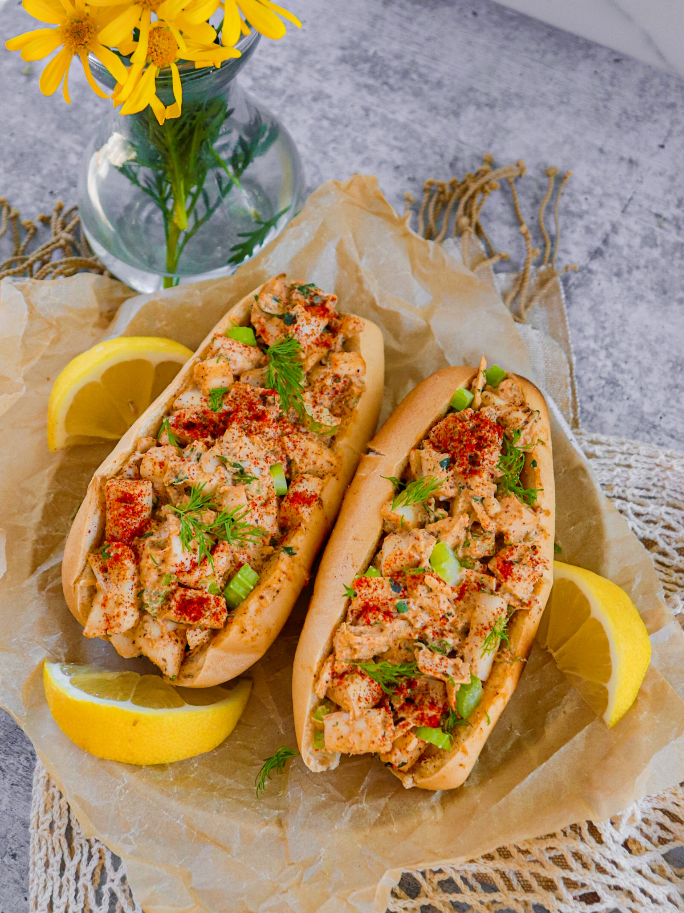

New England Lobstah Rolls

Hopefully your finished lostah rolls will somewhat resemble this picture!
This recipe takes around 45 minutes to make and is delicious. There will be an expectation of
you having basic cooking ingredients such as salt and pepper. If you would like to add to this
recipe you can cut up a potato to make some french fries quite easily.
Ingredients needed
- hot dog bun
- Shallot
- celery stalk
- Dill fronds minced
- Lemon cut into wedges
- Capers
- Vegan Mayo
Directions
- Roast the hearts of palm- Combine hearts of palm, seasoning, 1 tsp vegetable
oil, and a pinch of salt and pepper on another baking sheet and gently toss. Reoast until lightly browned,
18 to 20 minutes
- Make the dill dressing-Stir together shallot, celery, dill, lemon juice, mayo, and cpaers in large bowl.
Stir in roasted hearts of palm and season to taste with salt and pepper.
- Toast the buns and serve- Brush the buns with olive oil then toast them
in a large nonstick skillet pan
Ingredients should be doubled for 2 servings